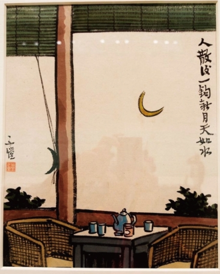

练习 · 散文阅读
我的漫画
丰子恺将艺术理解为以真切同情体会万物、与对象共感的活动，珍视儿童未被功利磨损的感知，并通过创作寄托对生命、美和和平的追求。
导读
文体与题材：散文
作者简介：丰子恺，现代漫画家、散文家、艺术教育者。
文本出处：2025年高考综合改革适应性测试（我的漫画版）文学类阅读选文。
内容脉络：文本一回顾漫画题材由古诗句、儿童生活到社会与自然的变化，呈现创作经验和情感取向；文本二以同一株树的不同观看方式起论，解释艺术同情、物我一体及感情移入，并由此论说儿童与艺术的关系。
内容主旨：丰子恺将艺术理解为以真切同情体会万物、与对象共感的活动，珍视儿童未被功利磨损的感知，并通过创作寄托对生命、美和和平的追求。
阅读重点：区分作者的具体创作经验与其美学主张，解释无功利观看、感情移入和儿童的艺术性之间的关系。
原文与随文研读
原文按结构分节；随文内容可定位至对应段落。
文本一·古诗：作者从诗句的意境出发，以简笔转化为漫画。
我从小喜读诗词。我所爱的，往往只是一篇中的一段，甚至一句，常把它译作小画，粘在座右，随时欣赏。作画意在笔先，只要意到，笔不妨不到，有时笔到了反而累赘。有人看了我的画，惊骇地叫道：“噫，这人只有一个嘴巴，没有眼睛鼻头！”“眼镜玻璃后面怎么不见眼睛？”对于他们，我实在无法解嘲，只得置之不理。“无言独上西楼”“几人相忆在江楼”“人散后，一钩新月天如水”等便是那时的作品。

句注 · 批注 2
四个时期的划分尺度
但又交互错综，不能判然划界四个时期按主要取材方向作概括。末句提示不同题材可交错出现，阅读后文宜把握重心的转移，同时注意旧有创作趣味仍可延续。
意到与笔到
只要意到，笔不妨不到简笔省略眼鼻等细节，取决于是否足以传达创作意图，显示作者不以形貌完备作为唯一标准。
文本一·儿童：对天真完整人格的珍爱进入儿童生活画面。
我作漫画由被动的创作而进于自动的创作，最初是描写家里的儿童生活相。我向来憧憬于儿童生活，尤其是那时，我初尝世味，看见当时社会里的虚伪骄矜之状，觉得成人大都已失本性，只有儿童天真烂漫，人格完整，这才是真正的“人”。于是变成了儿童崇拜者，在漫画中处处赞扬儿童。这些画我今日看时，一腔热血还能沸腾起来。这就是“阿宝两只脚，凳子四只脚”“弟弟新官人，妹妹新娘子”“爸爸回来了”等作品。最近我重展这些画册的时候，仿佛觉得年光倒流，返老还童，从前的憧憬，依然活跃在我的心中了。
文本一·社会与自然：日常幸福、社会苦难和草木生机承载不同情感。
后来我的画笔又改方向，从正面描写成人社会的现状了。我住在红尘万丈的上海，看见无数屋脊中浮出一只纸鸢来，恍悟春到人间，就作“都市之春”。看见楼窗里挂下一只篮来，就作“买粽子”。我住在杭州及故乡石门湾，看见市民的日常生活，就作“市井小景”“邻人之爱”；客居乡村，就作“话桑麻”“柳荫”。这些画中的情景，多少美观！这些人的生活，多少幸福！我明知道成人社会还有黑暗的一面，我的笔不忍描写，一时竟把它们抹杀了。后来我的笔终于描写了。①西谚曰：“漫画以笑语叱咤人间。”我就当面细看社会上的苦痛相、悲惨相、丑恶相、残酷相，而为它们写照。“都市奇观”“鬻儿”“警报解除后”“轰炸”就是这类的作品。
句注 · 批注 · 札记 3
两种社会画面
这些画中的情景，多少美观！这些人的生活，多少幸福！我明知道成人社会还有黑暗的一面，我的笔不忍描写，一时竟把它们抹杀了。比较作者起初回避黑暗与后来正面描绘苦痛的变化，分析艺术同情怎样影响取材。
“抹杀”的创作含义
一时竟把它们抹杀了此处指作者曾因不忍面对成人社会的黑暗而在创作中回避它们。后句“终于描写了”与之对应，显示同情心逐渐促使他正视社会苦难。
“沉郁”的具体内涵
我自己觉得真像沉郁的诗人下文用“意在笔先，神在言外”解释这种创作感受：一草一木的形象中含有身世、世情等深沉感慨。简洁的画面可以寄托超出所画对象表面的情意。
文本二·观看：由不同职业看树解释审美与实用的差异。
世间的物有各种方面，各人所见的方面不同。譬如一株树，在博物家，在园丁，在木匠，在画家，所见各人不同。博物家见其性状，园丁见其生息，木匠见其材料，画家见其姿态。
札记 1
审美观看与职业用途
画家只是欣赏目前的树的本身的姿态，而别无目的将此句同文本一“只要意到，笔不妨不到”对读：前者讨论观看时对形态的专注，后者讨论作画时为传意而取舍细节。两者共同说明艺术活动有其特定的注意和表现方式。
文本二·同情：从艺术家推广到儿童，说明感情移入的审美经验。
艺术家的同情心，不但及于同类的人物而已，又普遍地及于一切生物、无生物，犬马花草，在美的世界中均是有灵魂而能泣能笑的活物了。诗人常常听见子规的啼血，秋虫的促织，看见桃花的笑东风，蝴蝶的送春归；用实用的头脑看来，这些都是诗人的疯话。其实我们倘能身入美的世界中，而推广其同情心，及于万物，就能切实地感到这些情景了。画家与诗人是同样的，不过画家注重其形式姿态的方面而已。没有体得龙马的活力，不能画龙马；没有体得松柏的劲秀，不能画松柏。中国古来的画家都有这样的明训，我们的心要能与朝阳的光芒一同放射，方能描写朝阳；能与海波的曲线一同跳舞，方能描写海波。这正是“物我一体”的境涯，万物皆备于艺术家的心中。
在这里我们不得不赞美儿童了。因为儿童大都是最富于同情的，且其同情不但及于人类，又自然地及于猫犬、花草、鸟蝶、鱼虫、玩具等一切事物。③他们认真地对猫犬说话，认真地和花接吻，认真地和人像玩耍，其心比艺术家的心真切而自然得多！他们往往能注意大人们所不能注意的事，发现大人们所不能发现的点。所以儿童的本质是艺术的。换言之，即人类本来是艺术的，本来是富于同情的。只因长大起来，把这点心灵阻碍或消磨了。唯有聪明的人，能不屈不挠，即使外部饱受压迫，内部仍旧保藏着这点可贵的心。这种人就是艺术家。
句注 · 评议 3
理论与实例互读
万物皆备于艺术家的心中文本一展示创作选择，文本二解释审美观看的情感条件，两文互读可把抽象概念还原为题材与画面的具体关系。
艺术性与艺术技能
所以儿童的本质是艺术的这一命题承接儿童的同情心、观察力和投入状态，谈的是其感受世界的方式。作者据此倡导成人通过艺术修养保存和恢复对生命的亲近与共感。
感情移入
所谓感情移入，就是说我们对于美的自然或艺术品，能把自己的感情移入其中，没入其中，与之共鸣共感，这时候就经验到美的滋味。依本文定义，指欣赏者把自身感情投入对象，与之共鸣共感。这是丰子恺说明审美经验所用的理论概念。
文本一《我的漫画》，有删改。文本二《美与同情》，有删改。
第1题 · 文本鉴赏
下列对文本相关内容和艺术特色的分析鉴赏，正确的一项是（ ）
A．文本一列举大量漫画作品的名字，一方面是回顾自己创作历程的需要，另一方面体现出作者在绘画理论上对艺术的现实性的追求。
B．文本一记述自己漫画创作的题材从“古诗句”“儿童相”“社会相”到“自然”的转变，表明现在创作优于过去创作的价值评判。
C．两个文本整体上使用白话口语，但也插入一些文言句式或诗意表达，如“先得我心”“子规的啼血”“桃花的笑东风”等，造成一种刻意雕琢、追求庄重的效果。
D．文本二中，同样看树，博物家、园丁和木匠有一种态度，而画家采取另一种态度，前者更多考虑实用的目的，后者则注重对于形式本身的欣赏。
参考答案1展开 / 收起
参考作答
D。
审题与考查点
判断题材分类、审美观看和语言风格。
文本分析
A项 · 不符合查看证据 ↗
列举作品说明创作题材和历程，也包含古诗意境的转化；不能把全部作品都概括为追求现实性。
B项 · 不符合查看证据 ↗
四个时期按题材与经验分类，且明说交互错综，不能由顺序直接推出现在比过去价值更高。
C项 · 不符合查看证据 ↗
诗句和文言表达与白话叙述自然交织，说明创作感受和审美经验，未造成刻意庄重的整体风格。
D项 · 符合查看证据 ↗
文本二把职业目的与纯粹欣赏形式姿态相对，意在说明审美观看不同于实用关系。
知识点
主题分析：主题是作品通过人物、事件、形象和表达方式所形成的主要意义倾向。主题分析须说明作品围绕什么问题展开，以及怎样理解和评价这个问题。
文本证据与阅读推论：文本证据是能够支持某一理解的具体词句、叙事事实或结构关系。阅读推论则是依据这些材料，并借助适当的语言知识和事理作出的解释。
解题方法
将文本一的创作回顾与文本二的美学概念分开，逐项核对其判断层级和证据。
易误辨析
创作题材的变化不自动意味着价值排名。
答案组织与检核
核对四个时期是否构成优劣排序、作品列举的多种用途，以及文言诗句在整体亲切自然的语言中所起的作用；D项与文本二的直接比较一致。
第2题 · 语句鉴赏
对画线句子的分析与鉴赏，不正确的一项是（ ）
A．句子①引用西方谚语，意在指明漫画具有一种社会功能：通过讽刺笔法介入社会对现实社会予以批判和改造。
B．句子②中作者自比“沉郁的诗人”，指的是自己倾向于将忧愤深沉的情感融入看似寻常的一草一木，加以描摹传达。
C．句子③中连用三个“认真地”，不仅强调了儿童的“同情心”比起成人更加“真切而自然”，也体现出他们有意对抗外部的“压迫”。
D．句子④中“黄金时代”的比喻，既指作为人生阶段的童年时代，又代表了对建立在“美的世界”基础上的理想社会的向往。
参考答案2展开 / 收起
参考作答
C。
审题与考查点
联系四处画线的语境解释功能与概念所指。
文本分析
A项 · 符合查看证据 ↗
笑语叱咤将漫画的讽刺表达与社会批评相连，后文苦痛与残酷的写照落实这种功能。
B项 · 符合查看证据 ↗
作者借沉郁诗人的说法，把身世感受与世情融入草木，说明自然题材中的深沉情绪。
C项 · 不符合查看证据 ↗
三个认真地表现儿童真切自然地投入事物；抵抗压迫属于后文艺术家保存心灵的处境，不能转移给儿童的自觉目的。
D项 · 符合查看证据 ↗
黄金时代先称童年，随后艺术修养可使成人重新面见美好世界，兼含对幸福仁爱和平的向往。
知识点
词义与语境：语境是语言表达所处的上下文和交际情境。词在具体句中的意义，要结合搭配、句法关系、所指对象及表达目的来确定。
文本证据与阅读推论：文本证据是能够支持某一理解的具体词句、叙事事实或结构关系。阅读推论则是依据这些材料，并借助适当的语言知识和事理作出的解释。
解题方法
先确定句子主体，再看后文概念是否属于同一主体和情境，避免错移因果或目的。
易误辨析
儿童的自然投入与艺术家面对压迫的坚守是两种不同处境。
答案组织与检核
将四个序号各自放回语境，尤其区分儿童自然投入与艺术家在外部压迫下保存同情心这两个主体和层次。
第3题 · 理论阐释
为什么说“儿童的本质是艺术的”？请结合文本二的内容简要分析。
参考答案3展开 / 收起
参考作答
- 儿童具有广泛而真切的同情心，自然及于人、动物、植物和玩具，与艺术家的物我共感相通。
- 儿童能注意成年人忽略的细节，发现惯常实用眼光不易看见的美。
- 儿童善于自我没入，把兴趣和感情投入对象、忘记自身需求，这与艺术欣赏中感情移入的经验相近。
审题与考查点
依据文本二解释儿童特征如何符合作者的艺术观。
文本分析
广泛同情查看证据 ↗
文本将儿童对猫犬花草等的投入与艺术家对万物的同情相对应。
敏锐发现查看证据 ↗
对细节的注意突破成年人的常规观看，构成其发现美的能力。
投入与忘我查看证据 ↗
游戏中忘却自身的表现，对应前面给感情移入下的定义。
知识点
移情：文学鉴赏中的移情，是主体把自身的情感、态度或意愿赋予景物，使物象带有相应情感色彩的表现方式。
文本证据与阅读推论：文本证据是能够支持某一理解的具体词句、叙事事实或结构关系。阅读推论则是依据这些材料，并借助适当的语言知识和事理作出的解释。
解题方法
先提取艺术观看与同情的标准，再匹配儿童的三种表现，写出共同关系。
易误辨析
此处是作者美学论说中的概括，应在该理论范围内解释，不能写成儿童行为的普遍心理定律。
答案组织与检核
三个要点分别说明广泛同情、敏锐发现与忘我投入，并解释各自同艺术经验的共同处。
第4题 · 理论应用
请结合文本一的记叙，简要分析“感情移入”在丰子恺漫画创作中的体现。
参考答案4展开 / 收起
参考作答
- 儿童题材中，作者憧憬天真烂漫、人格完整的儿童生活，亲近儿童的感受，在画面中赞扬他们；重看画册时仍仿佛返老还童，说明这种感情持续存在。
- 描绘成人社会的幸福生活时，作者把对市井日常的珍爱投入“都市之春”“买粽子”“邻人之爱”等画面，着重表现其中的美观、幸福。
- 正视社会黑暗后，作者体会苦痛、悲惨和残酷，把悲悯与忧愤融入“鬻儿”“轰炸”等画作，用辛酸的形象表达对不幸者的同情和对现实的批评。
- 描绘自然时，作者从砖缝小草、受斩而抽芽的大树中体会生命力，将深沉的身世感受寄于草木；又以炮弹壳插红莲寄托和平愿望，体现个人感情与对象形态的相互感发。
审题与考查点
将感情移入的定义应用于文本一的创作经验。
文本分析
与儿童共感查看证据 ↗
儿童崇拜及重看画册时返老还童的感受，显示作者把自己投入儿童的生活世界。
珍爱市井幸福查看证据 ↗
“美观”“幸福”的评价表明日常景象经过作者情感的感受和选择。
体会社会苦难查看证据 ↗
从不忍描写到正面写照，取材变化伴随着对不幸处境的感受；“触目惊心”说明这种体验的强度。
借自然寄情查看证据 ↗
草木的生机与受损后抽芽引起生命感悟；炮弹与红莲的组合使战争经验转化为和平期望。
知识点
移情：文学鉴赏中的移情，是主体把自身的情感、态度或意愿赋予景物，使物象带有相应情感色彩的表现方式。
主题分析：主题是作品通过人物、事件、形象和表达方式所形成的主要意义倾向。主题分析须说明作品围绕什么问题展开，以及怎样理解和评价这个问题。
解题方法
先明确把自身情感投入对象并共鸣的关系，再依儿童、社会、自然分类举例，解释各自投入的感情。
易误辨析
只说画了什么题材不等于解释感情移入，必须写出情感与对象的关系。
答案组织与检核
每条同时写出创作对象、投入的感情和具体作品或细节；社会题材区分对幸福的珍爱与对苦难的悲悯。
参考文献
本文关联
主题分析3 处
阅读条目 →知识点 ↗主题分析：主题是作品通过人物、事件、形象和表达方式所形成的主要意义倾向。主题分析须说明作品围绕什么问题展开，以及怎样理解和评价这个问题。
知识点 ↗主题分析：主题是作品通过人物、事件、形象和表达方式所形成的主要意义倾向。主题分析须说明作品围绕什么问题展开，以及怎样理解和评价这个问题。
研习关联 ↗词义与语境、移情、文本证据与阅读推论、主题分析。
文本证据与阅读推论4 处
阅读条目 →知识点 ↗文本证据与阅读推论：文本证据是能够支持某一理解的具体词句、叙事事实或结构关系。阅读推论则是依据这些材料，并借助适当的语言知识和事理作出的解释。
知识点 ↗文本证据与阅读推论：文本证据是能够支持某一理解的具体词句、叙事事实或结构关系。阅读推论则是依据这些材料，并借助适当的语言知识和事理作出的解释。
知识点 ↗文本证据与阅读推论：文本证据是能够支持某一理解的具体词句、叙事事实或结构关系。阅读推论则是依据这些材料，并借助适当的语言知识和事理作出的解释。
研习关联 ↗词义与语境、移情、文本证据与阅读推论、主题分析。
词义与语境2 处
阅读条目 →知识点 ↗词义与语境：语境是语言表达所处的上下文和交际情境。词在具体句中的意义，要结合搭配、句法关系、所指对象及表达目的来确定。
研习关联 ↗词义与语境、移情、文本证据与阅读推论、主题分析。